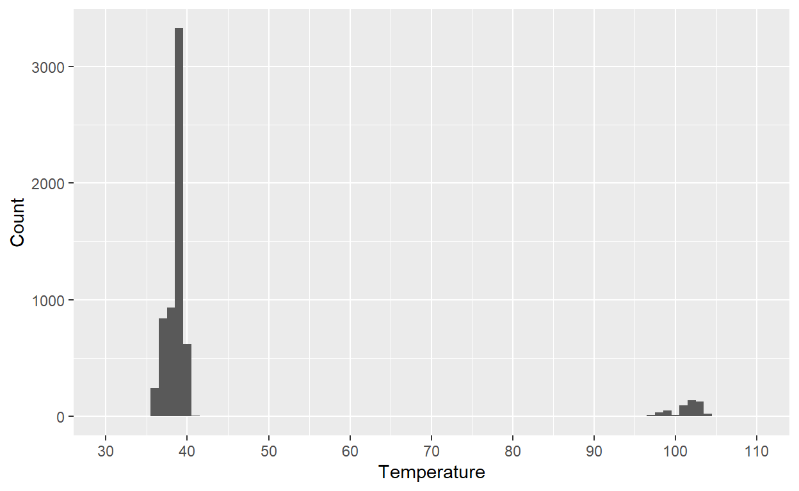
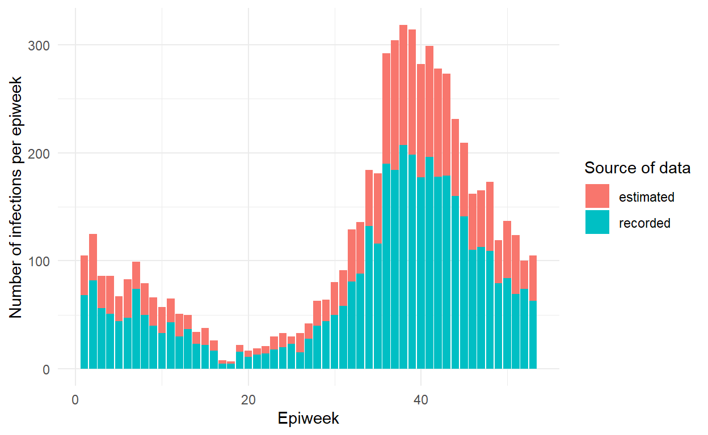
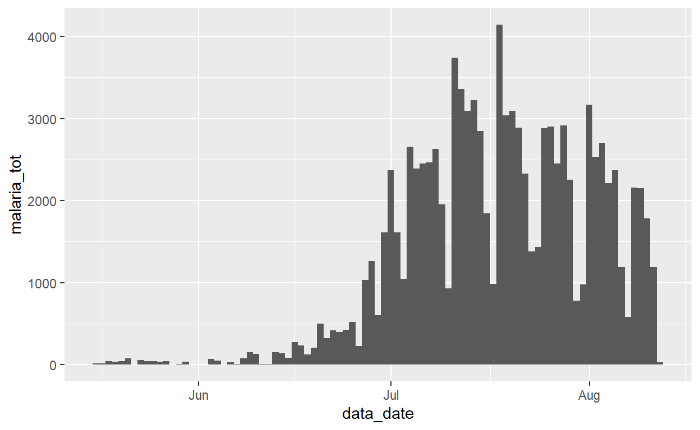

| ID: | Password: | ||||
|
|
|||||
Welcome to the course “Introduction to R for applied epidemiologists”, offered for free by Applied Epi - a non-profit organisation that offers open-source tools, training, and support to frontline public health practitioners.
This interactive tutorial focuses on cleaning of datasets often encountered by applied epidemiologists and public health practitioners, such as outbreak linelists, surveillance, and laboratory data.
This course is designed with the following objectives:
If this is your first introduction to R programming, please consider first completing our [R Setup and Data Import tutorial], which introduces R, RStudio, R projects, R code syntax, and explains how to import a dataset into R.
This course is available…
You can access this tutorial offline by downloading our R package … If viewing offline, you can view the videos by doing …
In this tutorial you will learn and practice:
%>%) to pass the dataset from one cleaning function to anotherThis tutorial adapts the Data cleaning and core functions section of our free Epidemiologist R Handbook, which is available for use offline as well.
We continually improve these tutorials by collecting your entries and submitted answers to the quiz questions. By continuing, you consent to this collection and use.
To continue anonymously… do XYZ.
This course is designed by epidemiologists with decades of ground-level experience in outbreak response and local public health work.
In this tutorial we will use the following datasets. Please take a few minutes to review the structure and content of each dataset before continuing.
Use the arrows on the right to scroll through hidden columns. Note that these are “raw” (messy) datasets that mimic problems commonly found in real-life epidemiological datasets.
A “linelist” is a term used in applied epidemiology to refer to a table that contains key information about each case or suspect case in an outbreak. Each row represents one case, and the columns contain variables such as age, sex, date of symptom onset, outcomes, etc.
This dataset contains 6611 rows and 28 columns. Below are the first 5 rows:
Click to download the raw dataset for your own practice.
Click to download the clean dataset as an .rds file for your own practice. A .rds file is an R-specific file type that preserves column classes. This ensures you will have only minimal cleaning to do after importing the data into R.
Aggregated data in epidemiology usually means a table of counts for each facility, or district, etc. Sometimes, the counts can also be per day, week, or month.
In this fictional dataset, each facility reported daily case counts of rapid-test (RDT)-confirmed malaria. Thus, each row represents the number of cases for a specific facility on a specific day.
This dataset contains 3038 rows and 10 columns. Below are the first 5 rows:
Click to download the clean malaria counts dataset as an .rds file for your own practice. A .rds file is an R-specific file type that preserves column classes. This ensures you will have only minimal cleaning to do after importing the data into R.
Photo or GIF of directory structure
Here is how to access the example data
We highly recommend doing our tutorial on Tidy Data in Applied Epidemiology. Collecting, formatting, and preparing your dataset before importing it into R is a critical step! LINK VIDEO TEASER
To use basic functions with public health data, the tidyverse metapackage is very useful. Tidyverse loads the dplyr, ggplot2, and other packages that are useful in epi data analysis.
We’ve preloaded the below packages for now. Installation and loading of these packages is described on the EpiRHandbook Suggested Packages page.
In this assignment we’ll work with X R packages, let’s load them!
pacman::p_load(___)pacman::p_load(rio, here, janitor, tidyverse)See this Epi R Handbook LINK for our recommended packages.
https://www.epirhandbook.com/en/import-and-export.html Import that data and save it as “raw” file
To import data from a sub-folder, the import() command should be modified so that it correctly tells R where to search for this file. This is done using the here() function.
linelist_raw <- import(here("data", "linelist_raw.xlsx")) # import data and save as named objectWhat is a pipe chain? A pipe chain refers to the use of the “pipe” operator %>% to chain together operations (such as cleaning, reordering and manipulating) for altering a dataset.
This allows us to carry out several different alterations of the dataframe in a single operation. It can be helpful to think of the pipe operator %>% as telling the computer “and then” between your operational commands. The order of this pipeline is important as operations occur sequentially, and so improperly ordered arguments may fail or (potentially more dangerously!) give incorrect values or unwanted outcomes.
Can you connect the following commands from the janitor package (clean_names, select(contains("date_")) and names() to clean the dataset linelist_raw and display the names of any columns that contain "_date"?
linelist_raw %>%linelist_raw %>%
clean_names() %>%If the order of cleaning and selecting columns had not been correct, then you would have missed the column “date_onset” as in the raw linelist it was called “date onset”.
This was a very simple example giving you a first taste of pipe operators and cleaning functions, as we progress through the chapter you will gain more familiarity with the functions available and how to use them in increasingly complex examples.
In R, column names are the header, or top, value of a column and are used as the default value in figures. In other statistical software (such as SAS and STATA) “labels” co-exist as longer printed versions of shorter column names, and while R can do this, it is not emphasized and for plotting and printing “friendly” column names, we generally adjust their display in the code to create the figure or tables.
As we call column names often, it is helpful to have a “clean” syntax. We suggest that they are:
These are often not what real, raw, data and linelists look like, luckily R has a set of very handy and easy to use tools to clean and standardize column names.
For example, if we look at the example linelist using the names() function:
names(linelist_raw)## [1] "case_id" "generation" "infection date" "date onset"
## [5] "hosp date" "date_of_outcome" "outcome" "gender"
## [9] "hospital" "lon" "lat" "infector"
## [13] "source" "age" "age_unit" "row_num"
## [17] "wt_kg" "ht_cm" "ct_blood" "fever"
## [21] "chills" "cough" "aches" "vomit"
## [25] "temp" "time_admission" "merged_header" "...28"We can see that there are numerous violations of this clean syntax. We have names with spaces (infection date), different naming patterns for dates (date onset vs infection date) and there must have been a merged header across the last two columns (as the second last column i called “merged_header” and the last “…28” indicating it was assigned a placeholder name (it is the 28th column)).
Manually changing these column names to the preferred clean syntax would be time consuming, error prone and would need to be repeated everytime new versions of the linelist became available. Luckily, R has some helpful functions to make this process much faster and reproducible.
The first function we will explore in detail is the clean_names() function from the janitor package. This function does a lot of the hard work of cleaning column names for us. It does this through:
Here we can see the differences in the column names of the cleaned and uncleaned dataset.
linelist_raw %>% #Define the dataset, and then
names() #Display the column names## [1] "case_id" "generation" "infection date" "date onset"
## [5] "hosp date" "date_of_outcome" "outcome" "gender"
## [9] "hospital" "lon" "lat" "infector"
## [13] "source" "age" "age_unit" "row_num"
## [17] "wt_kg" "ht_cm" "ct_blood" "fever"
## [21] "chills" "cough" "aches" "vomit"
## [25] "temp" "time_admission" "merged_header" "...28"linelist_raw %>% #Define the dataset, and then
clean_names() %>% #clean the dataset columns, and then
names() #Display the column names## [1] "case_id" "generation" "infection_date" "date_onset"
## [5] "hosp_date" "date_of_outcome" "outcome" "gender"
## [9] "hospital" "lon" "lat" "infector"
## [13] "source" "age" "age_unit" "row_num"
## [17] "wt_kg" "ht_cm" "ct_blood" "fever"
## [21] "chills" "cough" "aches" "vomit"
## [25] "temp" "time_admission" "merged_header" "x28"You can see that this has done a lot of the work for us, replacing spaces with "_“, and ensuring there are no unusual characters. However, if we want to standardize the entire dataset to the”clean syntax" described previously, we will have to include additional cleaning stages.
For example, if we wanted to use a similar style nomenclature such as “date_”, then we would have to carry out additional steps to the columns “infection_date”, “hosp_date”, “date_of_outcome”.
This manual name cleaning can be done through the function rename() from the dplyr package as part of a pipe chain. Here the function follows the syntax NEW = OLD. So to clean the linelist, rename the columns previously mentioned and then display the names, we would do the following:
linelist_raw %>%
clean_names() %>%
#New name #Old names
rename(date_infection = infection_date,
date_hospitalisation = hosp_date,
date_outcome = date_of_outcome) %>%
names()## [1] "case_id" "generation" "date_infection"
## [4] "date_onset" "date_hospitalisation" "date_outcome"
## [7] "outcome" "gender" "hospital"
## [10] "lon" "lat" "infector"
## [13] "source" "age" "age_unit"
## [16] "row_num" "wt_kg" "ht_cm"
## [19] "ct_blood" "fever" "chills"
## [22] "cough" "aches" "vomit"
## [25] "temp" "time_admission" "merged_header"
## [28] "x28"As you can see, the column names have changed. You can also do this by column position, though this is less encouraged as column positions can easily change between datasets and versions. Here we are updating the names of column 1 and 2 to “id” and “gen”
linelist_raw %>%
clean_names() %>%
#New name #Old names
rename(id = 1,
gen = 2) %>%
names()## [1] "id" "gen" "infection_date" "date_onset"
## [5] "hosp_date" "date_of_outcome" "outcome" "gender"
## [9] "hospital" "lon" "lat" "infector"
## [13] "source" "age" "age_unit" "row_num"
## [17] "wt_kg" "ht_cm" "ct_blood" "fever"
## [21] "chills" "cough" "aches" "vomit"
## [25] "temp" "time_admission" "merged_header" "x28"Another way of re-naming columns is through the select() function. This function subsets your dataset, removing unwanted columns, and allowing you to rename the columns you have kept.
linelist_raw %>%
select(#New name #Old name
date_infection = 'infection date',
date_hospitalisation = 'hosp date')As you can see, this has subset to the columns with the original names of 'infection date' and 'hosp date' and renamed them. Note, because of the spaces in the names of the dataset we need to put the column name within ’ ’ as R does not like spaces in column names.
select() can be used without renaming in order to subset a dataset to the columns you are interested in.
linelist_raw %>%
select(case_id, generation, gender)Using what we have learned, can you clean(), rename(), select() and head() to recreate the output below?
Remember the order of your pipe chain is important.This gives you an insight into how to clean and subset a dataset, however when you have a large dataset manually specifiying columns can be cumbersome. Sometimes you want to extract columns with a specific prefix/suffix, or when they contain a certain word.
Rather than manually typing these out, and especially if we have a cleaned dataset adhering to the “clean style” syntax specified previously, we can use “tidyselect” helper functions
Tidyselect helper functions are functions that work within dplyr functions such as select(), across() or summarise(). These offer convenient shortcuts for selecting subsets of columns that match specified criteria:
everything() - all othecolumns not mentionedlast_col() - the last columnwhere() - applies a function to all columns and selects those which are true
select(where(is.numeric))contains() - columns containing a character string
select(contains("time"))starts_with() - matches to a specified prefix
select(starts_with("date_"))ends_with() - matches to a specified suffix
select(ends_with("_post"))matches() - to apply a regulaexpression (regex)
select(matches("[pt]al))num_range() - a numerical range
select(num_range("week", 1:5))any_of() - matches if the column exists, but returns no erroif it is not found
select(any_of(date_onset, date_death, cardiac_arrest))In addition to these we can use normal operators such as:
c() - to list several columns
select(c(date_onset, hosp_date, gender)): - to select consecutive columns
select(1:5)! - fothe opposite
select(!c(date_onset, hosp_date, gender))& - AND
select(matches("date" & "outcome"))| - OR
select(matches("date" | "outcome"))Select can also be used to remove columns, rather than keep, by putting the minus symbol “-” in front of the column name
linelist %>%
select(-c(date_onset, fever:vomit)) %>% #This will remove date_onset and all columns from fever to vomit
names()## [1] "case_id" "generation" "date_infection"
## [4] "date_hospitalisation" "date_outcome" "outcome"
## [7] "gender" "age" "age_unit"
## [10] "age_years" "age_cat" "age_cat5"
## [13] "hospital" "lon" "lat"
## [16] "infector" "source" "wt_kg"
## [19] "ht_cm" "ct_blood" "temp"
## [22] "time_admission" "bmi" "days_onset_hosp"You can also remove a column using base R syntax, by defining it as NULL. For example:
linelist$date_onset <- NULL #Deletes column with base R syntaxCan you write a pipe chain that drops the columns from lon to source from linelist_raw?
It is good practice to clean your column names, but it is not necessary to in this example.
Remember, you do not need to specifiy each column name individually that you want to drop between two columnsWe need to put all columns with a “date” in them into the same nomenclature (date_) and then subset linelist_raw to contain these and all symptom columns. How would you do this using only clean_names() and select()?
You will have to combine renaming, a tidyselect helper function and a normal operator within select() to efficiently clean and subsetCreating new columns and transforming existing ones is easily done in R, where we recommend using the dplyr package function mutate() which uses the syntax NEW = VALUE/TRANSFORMATION.
For example, this would create a new column called new_col where each row has the value of 10.
linelist %>%
mutate(new_col = 10)You can also reference pre-existing columns to perform calculations. For example, to calculate the Body Mass Index (BMI) we can use the formula BMI = kg/m^2 using the column ht_cm and wt_kg through:
linelist %>%
mutate(bmi = wt_kg/(ht_cm/100)^2) %>%
select(wt_kg, ht_cm, bmi) %>% #This selects just the wt_kg, ht_cm and bmi columns
head() #This displays the top 6 rows to checkIn base R this would be carried out with
linelist$bmi = linelist$wt_kg / (linelist$ht_cm / 100) ^ 2)We can also create multiple new columns at once, which are separated with a comma and should begin on a new line
linelist %>%
mutate(
new_var_dup = case_id, # new column = duplicate/copy another existing column
new_var_static = 7, # you can create static variables that are the same for each row
new_var_static = new_var_static + 5, # you can overwrite a column, and it can be a calculation using other variables
) %>%
select(case_id, hospital, date_hospitalisation, contains("new")) %>%
head()Can you take what you have learned in the previous chapters and create a new column called age_months from age, and then subset to only include age, age_months and gender? Note, you should ensure that all values in age are the same unit (specified in age_unit), and convert according to this.
You can use ifelse() to carry out different operations based on another value, this is a vectorised version of the if statement, and so will run through each row of a column and return an answer
ifelse(age_unit == "years", #The condition, if the value in the column age_unit DOES equal years then the function will return...
age * 12, #this value, and if the value in column age_unit DOES NOT equal years, then the function will return...
age #the value in age without manipulation
)Columns contain values that are dates, numbers or logical values (TRUE/FALSE) and will only behave if correctly classified. Trying to sum “2” and “1” of class character will return an error, and summing 2 and 1 of class numeric will return 3.
The class of a column is displayed when we use skim() and individually we can check the value of columns with class(). For instance,
class(linelist_raw$age)## [1] "character"we can see that this column has been incorrectly assigned as “character”. Can you reassign the class of this column to numeric using as.numeric()?
linelist %>%## function (check_env)
## {
## last_value <- check_env$.last_value
## env <- learnr_env(envir_prep = check_env$.envir_prep, envir_result = check_env$.envir_result)
## final_grade <- legacy_graded(correct = default_correct, message = default_message)
## found_grade <- FALSE
## for (cond in conditions) {
## grade <- evaluate_condition(cond, last_value = last_value,
## env = env)
## if (length(grade)) {
## final_grade <- grade
## found_grade <- TRUE
## break
## }
## }
## glue_correct <- glue_correct %||% gradethis_legacy_options$gradethis.glue_correct
## glue_incorrect <- glue_incorrect %||% gradethis_legacy_options$gradethis.glue_incorrect
## legacy_graded(correct = final_grade$correct, message = glue_message(if (final_grade$correct)
## glue_correct
## else glue_incorrect, .is_match = found_grade, .is_correct = final_grade$correct,
## .message = final_grade$message, .message_pipe_warning = NULL,
## .correct = correct, .incorrect = incorrect))
## }
## <bytecode: 0x0000000014046bc8>
## <environment: 0x000000001404bae0>Using the same syntax you can convert columns to character with as.character() or to logical operators, as.logical() or to a factor with as.factor() with base R, or as_factor from the package forcats.
Converting dates is slightly trickier, and it requires careful attention to the format (e.g. “Month/Day/Year” or “Day/Month/Year”). After converting to the class Date, check your data to confirm each value was converted correctly.
Often your data will be grouped, and so functions such as mutate() will behave differently than if the data is not grouped. Additionally, summarising functions such as mean(), min(), max() will calculate by group and not by all the rows.
# age normalized to mean of ALL rows
linelist %>%
summarise(mean_age = mean(age, na.rm = T))# age normalized to mean of hospital group
linelist %>%
group_by(hospital) %>%
summarise(mean_age = mean(age, na.rm = T))The function across() allows us to apply a function to everything specified within it. Columns are specified using the .cols = function, either individually, or with “tidyselect” helper functions. The function to apply to these columns is then specified with .fns = (note the function is specified without parentheses “()”).
linelist %>%
mutate(across(.cols = c(temp, ht_cm, wt_kg), .fns = as.character))Can you update the above function using “tidyselect” helper functions to convert any columns that contain “date” to character?
## function (check_env)
## {
## last_value <- check_env$.last_value
## env <- learnr_env(envir_prep = check_env$.envir_prep, envir_result = check_env$.envir_result)
## final_grade <- legacy_graded(correct = default_correct, message = default_message)
## found_grade <- FALSE
## for (cond in conditions) {
## grade <- evaluate_condition(cond, last_value = last_value,
## env = env)
## if (length(grade)) {
## final_grade <- grade
## found_grade <- TRUE
## break
## }
## }
## glue_correct <- glue_correct %||% gradethis_legacy_options$gradethis.glue_correct
## glue_incorrect <- glue_incorrect %||% gradethis_legacy_options$gradethis.glue_incorrect
## legacy_graded(correct = final_grade$correct, message = glue_message(if (final_grade$correct)
## glue_correct
## else glue_incorrect, .is_match = found_grade, .is_correct = final_grade$correct,
## .message = final_grade$message, .message_pipe_warning = NULL,
## .correct = correct, .incorrect = incorrect))
## }
## <bytecode: 0x0000000014046bc8>
## <environment: 0x0000000013ae90a8>This dplyr function allows us to “fill in” missing values with the first available value in an order you specify. For example, you have two vectors, one containing the patient’s village of detection and another containing the patient’s village of residence. You can use coalesce to pick the first non-missing value for each index:
village_detection <- c("a", "b", NA, NA)
village_residence <- c("a", "c", "a", "d")
village <- coalesce(village_detection, village_residence)
village # print## [1] "a" "b" "a" "d"This works the same way for a dataset
linelist %>%
transmute(first_date = coalesce(date_infection, date_onset),#transmute() is the same as mutate(), except it drops everything not specified in the brackets
date_infection,
date_onset) %>%
head()In your datasets, you may want to take cumulative sum/mean/min/max etc values across all the rows in the dataframe. For example, calculating the cumulative sum of cases across an outbreak or per day can give us an idea of how the infection is progressing. To calculate the cumulative sum across the entire outbreak, we would do the following:
Can you use what you have learned in order to produce a cumulative sum (in a column called cumulative_cases) of the epidemic by healthcare setting from linelist?
linelist %>% Remember to use group_by() The package dplyr has the function distinct() which removes duplicated rows in the dataset, by default it considers all columns though this can be adjusted. Here we will ensure that no rows are 100% duplicates of other rows (evaluated across all columns) in the dataset linelist_raw. We are comparing the number of rows in the original and de-duplicated
## [1] 6611## [1] 6609As you can see the linelist goes from 6611 rows to 6609 These omitted rows would have been 100% duplicates of other rows.
Now we are going to run through everything we have learned so far in order to convert linelist_raw into linelist, this will require several steps.
You have already done each of these steps individually (and some together), this is a case of remembering how to use rename(), select(), mutate() and a few other functions.You will occasionally have to re-code values, this can be due to a number of reasons
To change values manually we can use the recode() function within mutate(). For instance, to fix a date that has been incorrectly included we use the following:
Another example of when you would use recode is if you have a column with several different spellings and missing values.
table(linelist_raw$hospital, useNA = "always") # print table of all unique values, including missing ##
## Central Hopital Central Hospital
## 11 457
## Hospital A Hospital B
## 290 290
## Military Hopital Military Hospital
## 32 800
## Mitylira Hopital Mitylira Hospital
## 1 79
## Other Port Hopital
## 907 48
## Port Hospital St. Mark's Maternity Hospital (SMMH)
## 1756 417
## St. Marks Maternity Hopital (SMMH) <NA>
## 11 1512As you can see, we need to do some manual cleaning in order to correct misspellings.
linelist_updated <- linelist_raw %>%
mutate(hospital = recode(hospital,
# for reference: OLD = NEW
"Mitylira Hopital" = "Military Hospital",
"Mitylira Hospital" = "Military Hospital",
"Military Hopital" = "Military Hospital",
"Port Hopital" = "Port Hospital",
"Central Hopital" = "Central Hospital",
"other" = "Other",
"St. Marks Maternity Hopital (SMMH)" = "St. Mark's Maternity Hospital (SMMH)"
))
table(linelist_updated$hospital, useNA = "always")##
## Central Hospital Hospital A
## 468 290
## Hospital B Military Hospital
## 290 912
## Other Port Hospital
## 907 1804
## St. Mark's Maternity Hospital (SMMH) <NA>
## 428 1512We can also re-code based on logical criteria, you can use replace() within mutate() and use it with logical conditions in order to specify which rows to change using the following general syntax
mutate(col_to_change = replace(col_to_change, criteria for rows, new value))For instance, if you know a row that is identified with a certain id has the wrong value (such as gender), you can correct this using a logical condition.
linelist %>%
mutate(gender = replace(gender, case_id == "2195", "Female"))This will find the row with the case_id of “2195” and change the gender to “Female”.
Another useful tool for simple logic is ifelse(), if_else() and case_when(). These “if else” commands are simplified versions of an if and else programming statement with the general syntax of
ifelse(condition, value to return if condition evaluates to TRUE, value to return if condition evaluates to FALSE)Here we are creating a column source_known column where the value of a row is “known” if the row’s value in column source is not missing. If it is missing then it will be set to “unknown”
linelist %>%
mutate(source_known = ifelse(!is.na(source), "known", "unknown"))if_else() is a function from dplyr that handles dates. Note that if the “true” value is a date, the “false” value must also qualify a date, hence the use of NA_real_ instead of NA.
linelist %>%
mutate(date_death = if_else(outcome == "Death", date_outcome, NA_real_))Complex logic takes simple logic to the next level and allows us to input several different criteria. For example, if you are re-coding into several new groups you can use dplyr’s case_when() function.
case_when() command consists of logical statements and outcomes seperated by a “tilde” ~. The logic criteria are on the left and the values on the right with statements seperated by commas.
For example, here we utilize the columns age and age_unit to create a column age_years:
linelist <- linelist %>%
mutate(age_years = case_when(
age_unit == "years" ~ age, # if age is given in years
age_unit == "months" ~ age/12, # if age is given in months
is.na(age_unit) ~ age, # if age unit is missing, assume years
TRUE ~ NA_real_)) # any other circumstance, assign missingThe criteria are applied in the order the case_when() statement is written. So if the criteria is met by the first argument (here, age_unit == “years”), then the remaining criteria are not tested. It is therefore important to order your arguments correctly, as in when writing a pipe chain %>%, from most specific to generic.
Along those lines, in your final statement, place TRUE on the left-side, which will capture any row that did not meet any of the previous criteria. The right-side of this statement could be assigned a value like “check me!” or missing.
DANGER: Values on the right-side must all be the same class - either numeric, character, date, logical, etc. To assign missing (NA), you may need to use special variations of NA such as NA_character_, NA_real_ (for numeric or POSIX), and as.Date(NA). Read more in Working with dates.
Here we want to look at the temperatures of people recorded in the dataset. However, upon first visualization we can see that there is some discordence in the dataset.

Most of the values are located between 35 and 41, as expected if we were recording temperatures in °C, however some values are around 100, and so we can deduce that these have been incorrectly recorded in °F. Using the formula, °C = (°F − 32) * 5/9, can you use complex logic to convert values that are above 90 and below 120 to Celcius?
linelist %>%
mutate()You will need to use case_when and greater than (temp >) and less than (temp <) combined with the and (&)Missing values are an ever present facet of dealing with real world data, and it is important to correctly identify and handle them in order to highlight data gaps and adjust our analysis accordingly. There are several inbuilt functions for dealing with missing data, depending on the scenario and the class of data.
To change missing values (NA) to a specific value, such as “Missing”, we can use the dplyr function replace_na() with mutate()
Factors are R’s way to handle ordered values such as c(“First”, “Second”, “Third”) or to set the order that values (e.g. hospitals) appear in tables and plots.
If your data are class Factor and you try to convert NA to “Missing” by using replace_na(), you will get this error: invalid factor level, NA generated. You have tried to add “Missing” as a value, when it was not defined as a possible level of the factor, and it was rejected.
The easiest way to solve this is to use the forcats function fct_explicit_na() which converts a column to class factor, and converts NA values to the character “(Missing)”.
To convert a specific value to NA, use dplyr’s na_if(). The command below performs the opposite operation of replace_na(). In the example below, any values of “Missing” in the column hospital are converted to NA.
However, na_if() cannot be used for logical criteria (e.g. “all values > 99”) - use replace() or case_when() for this:
We are now going to practice these different methods of replacing NA values. In linelist can you do the following:
age column to ]“Age not recorded”bmi are below 10 or above 40, replace them with NAYou will need to use both na_if() and replace(), and a few logical operators ("|", "<", ">")Use the R package linelist and it’s function clean_variable_spelling() to clean a data frame with a cleaning dictionary. linelist is a package developed by RECON - the R Epidemics Consortium.
Import the dictionary file into R cleaning_dictionary <- import(cleaning_dictionary.csv)
Pass the rawlinelist to clean_variable_spelling(), specifiying to wordlists = the cleaning dictionary dataframe. The spelling_vars argument can be used to specify which column in the dictionary refers to the columns (3rd by default), or can be set to NULL in order to have the dictionary apply to all character and factor columns. Note this function can take a long time to run.
linelist <- linelist %>%
linelist::clean_variable_spelling(
wordlists = cleaning_dict,
spelling_vars = "col", # dictionary column containing column names
)There are numerous reasons why you may want to categorise numeric values, such as for age groups, lab values etc. R has several ways of doing this.
age_categories(), from the epikit packagecut() from base Rcase_when()quantile() and ntile()With the epikit package, you can use the age_categories() function to easily categorize and label numeric columns (note: this function can be applied to non-age numeric variables too). As a bonus, the output column is automatically an ordered factor.
Here are the required inputs:
breakers = argument, provide a numeric vector of break points for new groups.For example
linelist <- linelist %>%
mutate(
age_cat = age_categories( # create new column
age_years, # numeric column to make groups from
breakers = c(0, 5, 10, 15, 20, # break points
30, 40, 50, 60, 70)))
# Display the table
table(linelist$age_cat, useNA = "always")##
## 0-4 5-9 10-14 15-19 20-29 30-39 40-49 50-59 60-69 70+ <NA>
## 1095 1095 941 743 1073 528 226 70 25 6 86Break values specified are by default the lower bounds, here the categorisation occurs so that the left/lower side is “open” and “inclusive”. . You can adjust how the labels are displayed with separator =, with the default as “-”.
You may also want to set an upper limit, this will categorise any value above the last breaker as NA. This is doing using ceiling = TRUE.
linelist <- linelist %>%
mutate(
age_cat = age_categories( # create new column
age_years, # numeric column to make groups from
breakers = c(0, 5, 10, 15, 20, # break points
30, 40, 50, 60, 70),
ceiling = TRUE))
# Display the table
table(linelist$age_cat, useNA = "always")##
## 0-4 5-9 10-14 15-19 20-29 30-39 40-49 50-59 60-70 <NA>
## 1095 1095 941 743 1073 528 226 70 26 91Alternatively, instead of using breakers = you can provide lower =, upper = and by =:
linelist <- linelist %>%
mutate(
age_cat = age_categories( # create new column
age_years, # numeric column to make groups from
lower = 0,
upper = 70,
by = 5))
# Display the table
table(linelist$age_cat, useNA = "always")##
## 0-4 5-9 10-14 15-19 20-24 25-29 30-34 35-39 40-44 45-49 50-54 55-59 60-64
## 1095 1095 941 743 638 435 326 202 133 93 40 30 12
## 65-69 70+ <NA>
## 13 6 86cut() is a base R alternative to age_categories(). The basic syntax is to first provide a numeric culumn to be cut (age_years), and then the breaks = argument which is a numeric vector c() of break points.
By default, the categorisation occurs so the right/upper side is “open” and “inclusive”, this is the opposite behavior to age_categories() function. You can reverse this behavior, and so align it with the age_categories() function through adding the right = TRUE argument.
Thus, by default, “0” values are excluded from the lowest group, and categorized as NA! “0” values could be infants coded as age 0 so be careful! To change this, add the argument include.lowest = TRUE so that any “0” values will be included in the lowest group. The automatically-generated label for the lowest category will then be “[A],B]”. Note that if you include the include.lowest = TRUE argument and right = TRUE, the extreme inclusion will now apply to the highest break point value and category, not the lowest.
##
## [0,5] (5,10] (10,15] (15,20] (20,30] (30,50] (50,70] (70,100]
## 1315 1065 930 696 1013 694 84 5
## <NA>
## 86It is very important to check your work here, do so by cross-tabulating the numeric and category columns
## Categories
## Numeric Values [0,5] (5,10] (10,15] (15,20] (20,30] (30,50] (50,70]
## 0 122 0 0 0 0 0 0
## 0.0833333333333333 1 0 0 0 0 0 0
## 0.25 1 0 0 0 0 0 0
## 0.333333333333333 3 0 0 0 0 0 0
## 0.416666666666667 1 0 0 0 0 0 0
## 0.5 4 0 0 0 0 0 0
## Categories
## Numeric Values (70,100] <NA>
## 0 0 0
## 0.0833333333333333 0 0
## 0.25 0 0
## 0.333333333333333 0 0
## 0.416666666666667 0 0
## 0.5 0 0Re-labeling NA values
You may want to assign NA values a label such as “Missing”. Because the new column is class Factor (restricted values), you cannot simply mutate it with replace_na(), as this value will be rejected. Instead, use fct_explicit_na() from the forcats package, as explained in the Factors page.
##
## 0-4 5-9 10-14 15-19 20-29 30-49
## 1095 1095 941 743 1073 754
## 50-69 70-100 Missing age <NA>
## 95 6 86 0Can you write some code to create a new column temp_cat to convert values in temp to the following categories:
set the lower bound to 0, and then display only the columns temp and temp_cat?
You will need to use the function cut() and specify the correct breaks, and remember that cut() occurs on the right side, and age_categories() the left, so if you are using cut() you may also need to include the argument right = FALSE linelist %>%
mutate(temp_cat = cut(
temp,
breaks = c(0, 38, 39.4, 45),
right = FALSE,
labels = c("No fever", "Low grade fever", "High grade fever"))) %>%
select(temp, temp_cat)Quantiles, or percentiles, typically refer to a value below which a proportion of values fall. For example, the 95th percentile of ages in linelist would be the age below which 95% of the ages fall.
However in common speech, “quartiles” and “deciles” can also refer to the groups of data as equally divided into 4, or 10 groups (note there will be one more break point than group).
To get quantile break points, you can use quantile() from the stats package from base R. You provide a numeric vector (e.g. a column in a dataset) and vector of numeric probability values ranging from 0 to 1.0. The break points are returned as a numeric vector. Explore the details of the statistical methodologies by entering ?quantile.
## 0% 25% 50% 75% 90% 95%
## 0.0 6.0 13.0 23.0 33.9 41.0You can use the results of quantile() as break points in age_categories() or cut(). Below we create a new column deciles using cut() where the breaks are defined using quantiles() on age_years. Below, we display the results using tabyl() from janitor so you can see the percentages (see the Descriptive tables page). Note how they are not exactly 10% in each group.
Another tool to make numeric groups is the dplyr function ntile() which breaks your data into evenly sized groups - be aware that unlike in quantile() the same value could appear in more than one group. Firstly you provided the numeric vector (the column) and the number of groups with the values in the new column created being the group “numbers” not the range of values themselves (as when you use cut()).
# make groups with ntile()
ntile_data <- linelist %>%
mutate(even_groups = ntile(age_years, 10))
# make table of counts and proportions by group
ntile_table <- ntile_data %>%
janitor::tabyl(even_groups)
# attach min/max values to demonstrate ranges
ntile_ranges <- ntile_data %>%
group_by(even_groups) %>%
summarise(
min = min(age_years, na.rm=T),
max = max(age_years, na.rm=T)
)
# combine and print - note that values are present in multiple groups
left_join(ntile_table, ntile_ranges, by = "even_groups")Now we’ll add some of this to the cleaning pipe chain so you can see how all the steps we have learned so far are coming together to create one cleaning pipeline!
Adding rows one-by-one manually is tedious but can be done with add_row() from dplyr. Remember that each column must contain values of only one class (either character, numeric, logical, etc.). So adding a row requires nuance to maintain this.
Use .before and .after. to specify the placement of the row you want to add. .before = 3 will put the new row before the current 3rd row. The default behavior is to add the row to the end. Columns not specified will be left empty (NA).
The new row number may look strange (“…23”) but the row numbers in the pre-existing rows have changed. So if using the command twice, examine/test the insertion carefully.
If a class you provide is off you will see an error like this: Error: Can't combine ..1$infection date <date> and ..2$infection date <character>.
(when inserting a row with a date value, remember to wrap the date in the function as.Date() like as.Date(“2020-10-10”)).
Bind rows
To combine datasets together by binding the rows of one dataframe to the bottom of another data frame, you can use bind_rows() from dplyr. This is explained in more detail in the page Joining data.
A typical cleaning step after cleaning columns and recoding values is to filter the dataset to specific rows with the dplyr function filter().
The simplest way of filtering, is to use a logical condition (“==”, “!=”, “>”, “<”, etc), so that only rows where the logical statement is TRUE are kept. For example here, we are only keeping rows where the gender is equal to “f”.
## [1] 6610## [1] 3139From the reduction in rows you can see that we have subset the dataset.
A common use of filtering is to remove rows that have missing values. This can either be done for any missing values in any column, by not specifiying any arguments in the tidyr function drop_na(), or specific columns by including them within drop_na().
Can you now write a pipe chain to filter out any rows with a bmi of more than 20, and then drop any rows that have NA values in any column between fever and vomit, and then show the first 6 rows with head()?
Remember to use logical operators, and that you can specify a group of consective columns with ":". linelist %>%
filter(bmi < 20) %>%
drop_na(fever:vomit) %>%
head()You can also filter by row number, this is done using the dplyr function row_number(). Here you will often use the operator %in% to specify all numbers within a supplied vector. For instance
You can also use the filter function as part of a standalone command (not part of a pipe chain), as in all other dplyr functions the first argument must be the dataset itself. Here we show how to remove NA values:
and this can also be done in base R
We may want to perform a calculation within a row, and to do so we can use rowwise() from dplyr.
For example, this code applies rowwise() and then creates a new column that sums the number of the specified symptom columns that have value “yes”, for each row in the linelist. The columns are specified within sum() by name within a vector c(). rowwise() is essentially a special kind of group_by(), so it is best to use ungroup() when you are done.
As you specify the column to evaluate, you may want to use the “tidyselect” helper functions.
For example, the following code:
rowwise() so the following operation (sum()) is applied within each row (not summing entire columns)is.na() evaluated to TRUE (they are missing data).ungroup() to remove the effects of rowwise() for subsequent stepsYou could also provide other functions, such as max() to get the latest or most recent date for each row:
The dplyr function arrange() allows us to sort or order rows by column values. List the columns in the order they should be sorted on, and specify .by_group = TRUE if you want the sorting to occur by any groupings in the data.
By default the column will be sorted in “ascending” order, but you can change this to “descending” by wrapping it with desc().
Sorting data with arrange() is particularly useful when making Tables for presentation, using slice() to take the “top” rows per group, or setting factor level order by order of appearance.
For example, to sort the our linelist rows by hospital, then by date_onset in descending order, we would use:
Working with dates in R requires more attention than any other object class. Below, we offer some tools and example to make this process less painful. Luckily, dates can be wrangled easily with practice, and with a set of helpful packages such as lubridate.
Upon import of raw data, R often interprets dates as character objects - this means they cannot be used for general date operations such as making time series and calculating time intervals. To make matters more difficult, there are many ways a date can be formatted and you must help R know which part of a date represents what (month, day, hour, etc.).
Dates in R are their own class of object - the Date class. It should be noted that there is also a class that stores objects with date and time. Date time objects are formally referred to as POSIXt, POSIXct, and/or POSIXlt classes (the difference isn’t important). These objects are informally referred to as datetime classes.
To get the current “system” date you using Sys.Date(), and to get the time, Sys.time(). Alternatively you can return the date with today() and the time with now() from the lubridate package.
After importing a dataset into R, date column values may look like “1989/12/30”, “05/06/2014” or “13 Jan 2020”. In all these cases, R is likely still treating these as character values. R must be told that these are dates, and the format that the dates are in (which is Day, Month and Year).
By default, the values of class Date are displayed as YYYY-MM-DD, later in this section we will discuss how tho change these.
as.Date() is the base R function to convert an object or column to class Date. This requires:
guess_dates() from the linelist package)First, check the class of your column with class() from base R. Second, within the as.Date() function, use the format = argument to tell R the current format of the character date.
# Convert to class date
linelist <- linelist %>%
mutate(date_onset = as.Date(date_onset, format = "%d/%m/%Y"))Most of the strptime abbreviations are listed below. You can see the complete list by running ?strptime.
%d = Day number of month (5, 17, 28, etc.) %j = Day number of the year (Julian day 001-366) %a = Abbreviated weekday (Mon, Tue, Wed, etc.) %A = Full weekday (Monday, Tuesday, etc.) %w = Weekday number (0-6, Sunday is 0) %u = Weekday number (1-7, Monday is 1) %W = Week number (00-53, Monday is week start) %U = Week number (01-53, Sunday is week start) %m = Month number (e.g. 01, 02, 03, 04) %b = Abbreviated month (Jan, Feb, etc.) %B = Full month (January, February, etc.) %y = 2-digit year (e.g. 89) %Y = 4-digit year (e.g. 1989) %h = hours (24-hr clock) %m = minutes %s = seconds %z = offset from GMT %Z = Time zone (character)
Remember that you need to also get the date separator (/, -, space etc) correct in order to convert your dates
The lubridate package makes handling dates and times a lot easier than using base R, and is recommended whenever you are working with dates
**lubridate* has several helper functions designed to convert character objects to dates in a more intuitive and lenient way. These functions are specific to the rough date format, but allow for a variety of separators, and synonyms for dates (e.g. 01 vs Jan vs January) - they are named after abbreviations of date formats.
The ymd() function converts date values supplied as year, month, day. 2020-10-11 2020-10-11 The mdy() does the same but in the order of month, day, year. 2020-10-11 and the dmy() in the format as day, month , year 2020-10-11
Within a pipe chain, it may look like this
You can then check the conversion has applied correctly by using class().
Note that the above functions work best with 4-digit years. 2-digit years can produce unexpected results, as lubridate attempts to guess the century.
To convert a 2-digit year into a 4-digit year (all in the same century) you can convert to class character and then combine the existing digits with a pre-fix using str_glue() from the stringr package (see Characters and strings). Then convert to date.
## 2015
## 2015
## 2016
## 2017How would you use to convert all columns that containe date_ to a year, month, day Date class?
A more compact way of doing this would be to use a tidyselect helper function such as across(). See earlier exercises where we converted columns to as.Character().linelist %>%
mutate(across(.cols = contains("date_"), .fns = lubridate::ymd))You can use the lubridate functions make_date() and make_datetime() to combine multiple numeric columns in one date column. For example, if you have the numeric columns onset_day, onset_month and onset_year in the dataframe linelist
In the background, most software store dates as numbers. R stores dates from an origin of 1st January, 1970. Thus, if you run as.numeric(as.Date("1970-01-01)) you will get 0.
Microsoft Excel stores dates with an origin of either December 30, 1899 (Windows) or January 1, 1904 (Mac), depending on your operating system. See this Microsoft guidance for more information.
Excel dates often import into R as these numeric values instead of as characters. If the dataset you imported from Excel shows dates as numbers or characters like “41369”… use as.Date() (or lubridate’s as_date() function) to convert, but instead of supplying a “format” as above, supply the Excel origin date to the argument origin =.
This will not work if the Excel date is stored in R as a character type, so be sure to ensure the number is class Numeric!
NOTE: You should provide the origin date in R’s default date format (“YYYY-MM-DD”).
Often dates are in a variety of different formats, the function guess_dates() from the linelist package attempts to read these and convert them to a standard format.
For example guess_dates() would see a vector of the following character dates “03 Jan 2018”, “07/03/1982”, and “08/20/85” and convert them to class Date as: 2018-01-03, 1982-03-07, and 1985-08-20.
## [1] "2018-01-03" "1982-03-07" "1985-08-20"Converting columns to the date-time class follows a similar format to the date class with lubridate functions, only with _h (only hours supplied), _hm (hours and minutes supplied), or _hms (hours, minutes, and seconds supplied) appended to the end (e.g. dmy_hms()).
2020-01-01 16:00:00 2020-01-01 16:00:00 2020-01-01 16:20:00 2020-01-20 16:20:40
When working with a data frame, time and date columns can be combined to create a datetime column using str_glue() from stringr package and an appropriate lubridate function.
In this example, the linelist data frame has a column in format “hours:minutes”. To convert this to a datetime we follow a few steps:
If your data only contains character time (hours, minutes, seconds), you can convert and manipulate these as times using strptime() from base R. For example, to get the difference between these two times:
## [1] 1.583333You can extract the elements of a time with hour(), minute() and second() from lubridate.
Here is an example of extracting the hour, and then classifing by part of the day. We begin with the column time_admission, which is class Character in format “HH:MM”. First, the strptime() is used as described above to convert the characters to datetime class. Then, the hour is extracted with hour(), returning a number from 0-24. Finally, a column time_period is created using logic with case_when() to classify rows into Morning/Afternoon/Evening/Night based on their hour of admission.
We want to estimate the time from infection to onset. In order to do this, can you convert the columns date_infection and date_onset to Date objects, and then subtract date_infection from date_onset to create a new column, time_to_symptoms, and display only this column?
After converting the values from character class to Date, you can simply subtract the columns within mutatelinelist <- linelist %>%
mutate(date_infection = ymd(date_infection),
date_onset = ymd(date_onset),
time_to_symptoms = date_onset - date_infection) %>%
select(time_to_symptoms)Once converted you can extract aspects such as the year, month, day, weekday, week etc.
2 15 3
You can also extract time components from a datetime object or column. This can be useful if you want to view the distribution of admission times.
12 43 38.3301229
Date math is simple once you have converted the dates, to add on a certain number of days, weeks, months or years you can use the functions days(), weeks(), months(), years().
2022-02-18 2022-05-15 2025-02-15
and again the same for adding on time
2022-02-15 15:43:38 2022-02-15 12:46:38 2022-02-15 12:43:41
The differences between dates can be calculated by
## Time difference of 726 days## [1] "difftime"To do subsequent operations on a “difftime”, convert it to numeric with as.numeric().
This can all be brought together to work with data - for example:
## Time difference of 1 daysOnce dates are the correct class, you often want them to display differently, for example to display as “Monday 05 January” instead of “2018-01-05”. You may also want to adjust the display in order to then group rows by the date elements displayed - for example to group by month-year.
format()Adjust date display with the base R function format(). This function accepts a character string (in quotes) specifying the desired output format in the “%” strptime abbreviations (the same syntax as used in as.Date()). Below are most of the common abbreviations.
%d = Day number of month (5, 17, 28, etc.) %j = Day number of the year (Julian day 001-366) %a = Abbreviated weekday (Mon, Tue, Wed, etc.) %A = Full weekday (Monday, Tuesday, etc.) %w = Weekday number (0-6, Sunday is 0) %u = Weekday number (1-7, Monday is 1) %W = Week number (00-53, Monday is week start) %U = Week number (01-53, Sunday is week start) %m = Month number (e.g. 01, 02, 03, 04) %b = Abbreviated month (Jan, Feb, etc.) %B = Full month (January, February, etc.) %y = 2-digit year (e.g. 89) %Y = 4-digit year (e.g. 1989) %h = hours (24-hr clock) %m = minutes %s = seconds %z = offset from GMT %Z = Time zone (character)
To convert a Date column to Month-year format, we suggest you use the function as.yearmon() from the zoo package. This converts the date to class “yearmon” and retains the proper ordering. In contrast, using format(column, "%Y %B") will convert to class Character and will order the values alphabetically (incorrectly).
Below, a new column yearmonth is created from the column date_onset, using the as.yearmon() function. The default (correct) ordering of the resulting values are shown in the table.
##
## Apr 2012 May 2012 Jun 2012 Jul 2012 Aug 2012 Sep 2012 Oct 2012 Nov 2012
## 1 3 7 15 33 79 158 115
## Dec 2012 Jan 2013 Feb 2013 Mar 2013 Apr 2013 Apr 2014 May 2014 Jun 2014
## 55 44 23 18 9 7 64 100
## Jul 2014 Aug 2014 Sep 2014 Oct 2014 Nov 2014 Dec 2014 Jan 2015 Feb 2015
## 226 528 1070 1112 763 562 431 306
## Mar 2015 Apr 2015
## 277 186In contrast, you can see how only using format() does achieve the desired display format, but not the correct ordering.
##
## Apr 2012 Apr 2013 Apr 2014 Apr 2015 Aug 2012 Aug 2014 Dec 2012 Dec 2014
## 1 9 7 186 33 528 55 562
## Feb 2013 Feb 2015 Jan 2013 Jan 2015 Jul 2012 Jul 2014 Jun 2012 Jun 2014
## 23 306 44 431 15 226 7 100
## Mar 2013 Mar 2015 May 2012 May 2014 Nov 2012 Nov 2014 Oct 2012 Oct 2014
## 18 277 3 64 115 763 158 1112
## Sep 2012 Sep 2014
## 79 1070lubridate
We generally recommend using the floor_date() function from lubridate, with the argument unit = "week". This rounds the date down to the “start” of the week, as defined by the argument week_start =. The default week start is 1 (for Mondays) but you can specify any day of the week as the start (e.g. 7 for Sundays). floor_date() is versatile and can be used to round down to other time units by setting unit = to “second”, “minute”, “hour”, “day”, “month”, or “year”.
Which of these uses of floor_date() will result in rounding the date to the start of the week as a Thursday?
The returned value is the start date of the week, in Date class. Date class is useful when plotting the data, as it will be easily recognized and ordered correctly by ggplot().
If you are only interested in adjusting dates to display by week in a plot, see the section in this page on Date display. For example when plotting an epicurve you can format the date display by providing the desired strptime “%” nomenclature. For example, use “%Y-%W” or “%Y-%U” to return the year and week number (given Monday or Sunday week start, respectively).
For example, to work out the weekly cases we carry out the following operations:
mutate(), using floor_date() with unit = "week"count(); filter out any cases with missing datecomplete() from tidyr to ensure that all weeks appear in the data - even those with no rows/cases. By default the count values for any “new” rows are NA, but you can make them 0 with the fill = argument, which expects a named list (below, n is the name of the counts column).Note that lubridate also has functions week(), epiweek(), and isoweek(), each of which has slightly different start dates and other nuances. Generally speaking though, floor_date() should be all that you need. Read the details for these functions by entering ?week into the console.
Now imagine we want to create create a new variable, week_of_infection, that has the epiweek of date_infection. However, many of these dates are unknown (NA values). We had previously calculated the value time_to_symptoms by subtracting date_infection from date_onset and so we can use the median value of this to come up with a crude replacement for the date of infection.
Can you do the following:
estimated_or_recorded which if the value of date_infection is NA it will be “estimated” or “recorded” if it is not.estimated_or_recorded has the value “estimated”, then we will use subtract the median(time_to_symptoms) from date_onset to fill in the NA value in a new column date_infection_updateddate_infection_updated to the epiweek in a new column week_infection.linelist %>%
drop_na(date_onset) %>%
mutate(date_infection = ymd(date_infection),
date_onset = ymd(date_onset),
time_to_symptoms = as.numeric(date_onset - date_infection)) #Add in additonal arguments within this mutateYou will want to use two if_else() statements before you use the epiweek() function. Remember the order is important!linelist %>%
drop_na(date_onset) %>%
mutate(date_infection = ymd(date_infection),
date_onset = ymd(date_onset),
time_to_symptoms = as.numeric(date_onset - date_infection),
estimated_or_recorded = if_else(
is.na(date_infection),
"estimated",
"recorded"),
date_infection_updated = if_else(
estimated_or_recorded == "estimated",
date_onset - days(median(time_to_symptoms, na.rm = T)),
date_infection
),
week_infection = epiweek(date_infection_updated))This could then allow us to plot an epicurve of the week_infection, highlighting the number of estimated and recorded values.

You might consider using the package aweek to set epidemiological weeks. It has the functions date2week() and week2date() in which you can set the week start day with week_start = "Monday". This package is easiest if you want “week”-style outputs (e.g. “2020-W12”). Another advantage of aweek is that when date2week() is applied to a date column, the returned column (week format) is automatically of class Factor and includes levels for all weeks in the time span (this avoids the extra step of complete() described above). However, aweek does not have the functionality to round dates to other time units such as months, years, etc.
When data is present in different time time zones, it can often be important to standardise this data in a unified time zone. This can present a further challenge, as the time zone component of data must be coded manually in most cases.
In R, each datetime object has a timezone component. By default, all datetime objects will carry the local time zone for the computer being used - this is generally specific to a location rather than a named timezone, as time zones will often change in locations due to daylight savings time. It is not possible to accurately compensate for time zones without a time component of a date, as the event a date column represents cannot be attributed to a specific time, and therefore time shifts measured in hours cannot be reasonably accounted for.
To deal with time zones, there are a number of helper functions in lubridate that can be used to change the time zone of a datetime object from the local time zone to a different time zone. Time zones are set by attributing a valid tz database time zone to the datetime object. A list of these can be found here - if the location you are using data from is not on this list, nearby large cities in the time zone are available and serve the same purpose.
https://en.wikipedia.org/wiki/List_of_tz_database_time_zones
## [1] "2022-02-15 12:43:39 GMT"## Time difference of 0 secslead() and lag() are functions from dplyr which help find previous (lagged) or subsequent (leading) values in a vector. This is useful when doing calculations of change/difference between time units. For example, the weekly increase in cases.
Let’s say you want to calculate the difference in cases between a current week and the previous one. The data are initially provided in weekly counts as shown below. When using lag() or lead() the order of rows in the dataframe is very important! - pay attention to whether your dates/numbers are ascending or descending
First, create a new column containing the value of the previous (lagged) week.
When managing data, pivoting can be understood to refer to one of two processes:
Here we are focussing on the latter definition, with the former dealt with in the grouping data and descriptive tables sections.
Data are often entered and stored in a “wide” format - where a subject’s characteristics or responses are stored in a single row. While this may be useful for presentation, it is not ideal for some types of analysis.
Let us take the count_data dataset imported in the Preparation section above as an example. You can see that each row represents a “facility-day”. The actual case counts (the right-most columns) are stored in a “wide” format such that the information for every age group on a given facility-day is stored in a single row.
“Wide” data like this are not adhering to “tidy data” standards, because the column headers do not actually represent “variables” - they represent values of a hypothetical “age group” variable.
This format can be useful for presenting the information in a table, or for entering data (e.g. in Excel) from case report forms. However, in the analysis stage, these data typically should be transformed to a “longer” format more aligned with “tidy data” standards. The plotting R package ggplot2 in particular works best when data are in a “long” format.
Visualising the total malaria counts over time poses no difficulty with the data in it’s current format:

However, what if we wanted to display the relative contributions of each age group to this total count? In this case, we need to ensure that the variable of interest (age group), appears in the dataset in a single column that can be passed to ggplot2’s “mapping aesthetics” aes() argument.
pivot_longer()The tidyr function pivot_longer() makes data “longer”. It accepts a range of columns to transform (specified to cols =). Therefore, it can operate on only a part of a dataset. This is useful for the malaria data, as we only want to pivot the case count columns.
In this process, you will end up with two “new” columns - one with the categories (the former column names), and one with the corresponding values (e.g. case counts). You can accept the default names for these new columns, or you can specify your own to names_to = and values_to = respectively.
df_long <- malaria_counts %>%
pivot_longer(
cols = c(`malaria_rdt_0-4`, `malaria_rdt_5-14`, `malaria_rdt_15`, `malaria_tot`) #These are the columns we want to move into rows
)
df_longWe can also select these by position or named range
# provide columns by position
malaria_counts %>%
pivot_longer(
cols = 6:9
)malaria_counts %>%
pivot_longer(
cols = `malaria_rdt_0-4`:malaria_tot
)The two new columns are given the default names of name and value but we can specify our own names with the names_to and values_to arguments.
df_long <-
malaria_counts %>%
pivot_longer(
cols = starts_with("malaria_"),
names_to = "age_group",
values_to = "counts"
)Can you pivot linelist so that the columns fever, chills, cough, aches and vomit are brought into a new column called symptom and the values to symptom_present?
Remember you can use : to list consecutive columns!linelist %>%
pivot_longer(cols = fever:vomit,
values_to = "symptom_present",
names_to = "symptom")The above example works well in situations in which all the columns you want to “pivot longer” are of the same class (character, numeric, logical…). However, there will be many cases when, you will be working with data that was prepared by non-specialists and which follow their own non-standard logic.
One particularly common problem you will encounter will be the need to pivot columns that contain different classes of data. For example take the situation where you have a series of observations at different timesteps for three individuals, A, B and C.
If you were to use pivot_longer as we had learned above, then it would combine the date and status columns into a single column of class character, removing the useful information held with the class Date.
df_long_first <- df %>%
pivot_longer(
cols = -id,
names_to = c("observation")
)
class(df_long_first$value)## [1] "character"Instead, what we want to do is to maintain different columns for the different classes. We can do that through:
names_to = argument with the second value being ".value" where the . indicates the pivoted columns will be split based on a character in the namenames_sep = argument. Here the column names are “obs1_date” and “obs1_status” and so the splitting value is "_".df_long <-
df %>%
pivot_longer(
cols = -id,
names_to = c("observation", ".value"),
names_sep = "_"
)
df_longWe have a dataset, fever_followup which records a patients temperature in columns _temp and the date in _date and the corresponding fever classification in _fever for 3 time points.
Can you convert the table from wide to long format, maintaining the three different classes (Date, numeric, character)?
fever_followup_long <- fever_followup %>%This is very similar to the activity described abovefever_followup_long <- fever_followup %>%
pivot_longer(
cols = -patient,
names_to = c("observation", ".value"),
names_sep = "_"
)In some circumstances we may want to convert a dataset to a wider format.
A typical use-case is when we want to transform the results of an analysis into a format which is more digestible for the reader. Usually, this involves transforming a dataset in which information for one subject is are spread over multiple rows into a format in which that information is stored in a single row.
Suppose that we want to know the counts of individuals in the different age groups, by gender:
df_wide <-
linelist %>%
count(age_cat, gender)
df_wideThis is ideal for plotting and running analysis on, but not great for displaying as a table. In order to do this we can use pivot_wider(). This follows a similar format as pivot_longer() except instead of using _to, it uses _from:
id_colsnames_fromvalues_fromtable_wide <-
df_wide %>%
pivot_wider(
id_cols = age_cat,
names_from = gender,
values_from = n
)
table_wideIn some situations after a pivot(), and more commonly after a bind(), we are left with gaps in some cells that we would like to fill.
For example, take two datasets, each with observations for the measurement number, the name of the facility, and the case count at that time. However, the second dataset also has a variable Year.
When we perform a bind_rows() to join the two datasets together, the Year variable is filled with NA for those rows where there was no prior information (i.e. the first dataset):
df_combined <-
bind_rows(fill_table_1, fill_table_2) %>%
arrange(Measurement, Facility)
df_combinedIn this case, Year is a useful variable to include, particularly if we want to explore trends over time. Therefore, we use fill() to fill in those empty cells, by specifying the column to fill and the direction (in this case up):
df_combined %>%
fill(Year, .direction = "up")Often you will need to work with several sources of data in order to conduct epidemiological analysis or workflow. For instance, maybe you need to connect laboratory data to patient clinical outcomes, or Google mobility data to infectious disease trends, or even a dataset at one stage of analysis to a transformed version of itself.
Here we will learn to:
We will use the following datasets:
linelist_mini - A “miniature” version of the case linelist, containing only the columns case_id, date_onset, and hospital, and only the first 10 rowshosp_info - A separate data frame named hosp_info, which contains more details about each hospitallinelist_minihosp_infoNote that the name “Military Hospital” belongs to two different hospitals - one a primary level serving 10000 residents and the other a secondary level serving 50280 residents.
As we need the values of hosp_name in hosp_info to match the column in hospital in linelist_mini, the first step is to identify differences. We can look at the unique names using base R function unique().
unique(linelist_mini$hospital)## [1] "Other"
## [2] "Missing"
## [3] "St. Mark's Maternity Hospital (SMMH)"
## [4] "Port Hospital"
## [5] "Military Hospital"unique(hosp_info$hosp_name)## [1] "central hospital" "military" "port" "St. Mark's"
## [5] "ignace" "sisters"You can see that while some of the hospitals exist in both data frames, there are many differences in spelling. In order to join them, we should correct some of these spelling differences. In order to do so, we use some of the skills we learned earlier in the data cleaning sections.
Can you clean hosp_name in the dataset hosp_info so that they match the names in linelist_mini?
hosp_info <- hosp_info %>% You can use such functions as replace() and case_when() to rename values within a column using mutate.hosp_info <- hosp_info %>%
mutate(
hosp_name = case_when(
# criteria # new value
hosp_name == "military" ~ "Military Hospital",
hosp_name == "port" ~ "Port Hospital",
hosp_name == "St. Mark's" ~ "St. Mark's Maternity Hospital (SMMH)",
hosp_name == "central hospital" ~ "Central Hospital",
TRUE ~ hosp_name
)
)While